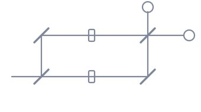

Send one photon into a beam splitter and it does not pick a side. It leaves in a superposition of both paths, with an amplitude on each. The two paths are then brought back together at a second beam splitter, and each output detector receives a contribution from both. Those contributions are amplitudes, not probabilities, so they can cancel: set the two arms to the same length and one detector fires every time and the other never does.
That is the whole trick, and it is worth sitting with, because every quantum algorithm is a larger version of it. The machine does not search the paths in parallel and report the best one. It arranges the phases so that the amplitudes for the answers you do not want arrive out of step and cancel, leaving the one you do. Move the phase in one arm below and watch where the light goes.